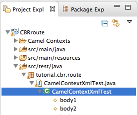
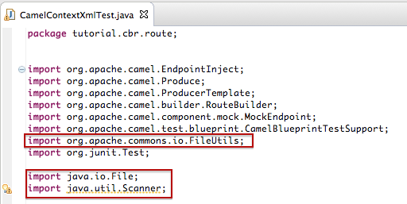

The New Camel JUnit Test Case wizard generates a boilerplate JUnit test case. This means that when you create or modify a route (for example, adding more processors to it), you'll need to modify the generated test case to add expectations and assertions specific to the new route you've created, so the test is valid for the new route.
In this tutorial you will:
delete the existing JUnit test case
generate a new JUnit test case for the CBRroute project
modify the newly generated JUnit test case
modify the CBRroute project's
pom.xmlfilerun the CBRroute with the New JUnit test case
observe the output
To complete this tutorial you will need the CBRroute project you used in To Trace a Message Through a Route
![[Note]](imagesdb/note.png) | Note |
|---|---|
If you skipped any tutorial after To Create a New Route,
you can use the prefabricated
|
Delete any trace-generated messages from the
CBRroute project's
/src/data/ directory and
/target/messages/ subdirectories in
Project Explorer. Trace-generated messages
begin with the ID- prefix. For example, Figure 31, “Trace-generated messages” shows six trace-generated
messages:

Select all trace-generated messages in batch, right-click to open the context menu, and select .
To delete the existing Apache Camel test case:
In Project Explorer, expand
src/test/javato expose theCamelContextXmlTestfile, as shown in Figure 32.Right-click it to open the context menu, and select .
A dialog box opens asking you to confirm deletion of the test case file.
Click .
Verify that the existing test case has been deleted by right-clicking CBRroute and selecting .
The
src/test/java/tutorial.cbr.routedirectory should be empty.
To create a new Apache Camel test case:
In Project Explorer, select
src/test/java.Right-click it to open the context menu, and then select > to open the New Camel JUnit Test Case wizard, as shown in Figure 33.
Make sure the Source folder field contains
CBRroute/src/test/java.Note If needed, you can click
 to find the proper folder.
to find the proper folder.The Package field defaults to
tutorial.cbr.route. To include the test case in a different package, enter the name of the package.In the Camel XML file under test field, enter
src/main/resources/OSGI-INF/blueprint/camelContext.xml, or use to open a file explorer, configured to screen for XML
files, to locate the file.Note The Name field defaults to
CamelContextXmlTestfor the name of the test file.Click to open the Test Endpoints page, shown in Figure 34.
By default, all endpoints are selected and will be included in the test case. Leave them selected for this tutorial.
Note You can select or deselect all endpoints by clicking the Select All or Deselect All button, or you can select and deselect individual endpoints by clicking the check box next to each.
Click .
Note If prompted, add JUnit to the build path.


The artifacts for the test are added to your project and appear in
Project Explorer under
src/test/java. The
class implementing the test case opens in the tooling's Java
editor:
package tutorial.cbr.route;
import org.apache.camel.EndpointInject;
import org.apache.camel.Produce;
import org.apache.camel.ProducerTemplate;
import org.apache.camel.builder.RouteBuilder;
import org.apache.camel.component.mock.MockEndpoint;
import org.apache.camel.test.blueprint.CamelBlueprintTestSupport;
import org.junit.Test;
public class CamelContextXmlTest extends CamelBlueprintTestSupport {
// TODO Create test message bodies that work for the route(s) being tested
// Expected message bodies
protected Object[] expectedBodies = {
"<something id='1'>expectedBody1</something>",
"<something id='2'>expectedBody2</something>";
// Templates to send to input endpoints
@Produce(uri = "file:src/data?noop=true")
protected ProducerTemplate inputEndpoint;
// Mock endpoints used to consume messages from the output endpoints and then perform assertions
@EndpointInject(uri = "mock:output")
protected MockEndpoint outputEndpoint;
@EndpointInject(uri = "mock:output2")
protected MockEndpoint output2Endpoint;
@EndpointInject(uri = "mock:output3")
protected MockEndpoint output3Endpoint;
@EndpointInject(uri = "mock:output4")
protected MockEndpoint output4Endpoint;
@EndpointInject(uri = "mock:output5")
protected MockEndpoint output5Endpoint;
@Test
public void testCamelRoute() throws Exception {
// Create routes from the output endpoints to our mock endpoints so we can assert expectations
context.addRoutes(new RouteBuilder() {
@Override
public void configure() throws Exception {
from("file:target/messages/Germany").to(output4Endpoint);
from("file:target/messages/GreatBritain").to(output3Endpoint);
from("file:target/messages/USA").to(output2Endpoint);
from("file:target/messages/France").to(output5Endpoint);
from("file:target/messages/invalidOrders").to(outputEndpoint);
}
});
// Define some expectations
// TODO Ensure expectations make sense for the route(s) we're testing
output4Endpoint.expectedBodiesReceivedInAnyOrder(expectedBodies);
// Send some messages to input endpoints
for (Object expectedBody : expectedBodies) {
inputEndpoint.sendBody(expectedBody);
}
// Validate our expectations
assertMockEndpointsSatisfied();
}
@Override
protected String getBlueprintDescriptor() {
return "OSGI-INF/blueprint/camelContext.xml";
}
}This generated JUnit test case is insufficient for the CBRroute
project, and it will fail to run successfully. You need to modify it
and the project's pom.xml, as described in
Modifying the CamelContextXmlTest file and Modifying the pom.xml file.
You need to modify the
CamelContextXmlTest.java file
to:
import several classes that support required file functions
create variables for holding the content of the various source
.xmlfilesread the content of the source
.xmlfilesdefine appropriate expectations
In Project Explorer, expand the CBRroute project to expose the
CamelContextXmlTestitem.Double-click
CamelContextXmlTestto open the file in the route editor.In the route editor, click the expand button next to
import org.apache.camel.EndpointInject;to expand the list.Add the three lines shown here:
Scroll down to the lines that follow directly after
// Expected message bodies.Replace those lines—
protected Object[] expectedBodies={ ...... expectedBody2</something>"};— with theprotected String body#;lines shown here:
Scroll down to the line
public void testcamelRoute() throws Exception {, and insert directly after it the linesbody# = FileUtils.readFileToString(new File("src/data/message#.xml"));shown here:
Scroll down to the lines that follow directly after
// TODO Ensure expectations make sense for the route(s) we're testing.Replace the block of code that begins with
output4Endpoint.expectedBodiesReceivedInAnyOrder(expectedBodies);and ends with ...inputEndpoint.sendBody(expectedBody); }with the lines shown here:
Leave the remaining code as is.
Save the file.
Check that your updated
CamelContextXmlTest.javafile has the required modifications. It should look something like this:package tutorial.cbr.route; import org.apache.camel.EndpointInject; import org.apache.camel.Produce; import org.apache.camel.ProducerTemplate; import org.apache.camel.builder.RouteBuilder; import org.apache.camel.component.mock.MockEndpoint; import org.apache.camel.test.blueprint.CamelBlueprintTestSupport; import org.apache.commons.io.FileUtils; import org.junit.Test; import java.io.File; import java.util.Scanner; public class CamelContextXmlTest extends CamelBlueprintTestSupport { // TODO Create test message bodies that work for the route(s) being tested // Expected message bodies // To assert that everything works as it should, read the content of created xml files. protected String body1; protected String body2; protected String body3; protected String body4; protected String body5; protected String body6; // Templates to send to input endpoints @Produce(uri = "file:src/data?noop=true") protected ProducerTemplate inputEndpoint; // Mock endpoints used to consume messages from the output // endpoints and then perform assertions @EndpointInject(uri = "mock:output") protected MockEndpoint outputEndpoint; @EndpointInject(uri = "mock:output2") protected MockEndpoint output2Endpoint; @EndpointInject(uri = "mock:output3") protected MockEndpoint output3Endpoint; @EndpointInject(uri = "mock:output4") protected MockEndpoint output4Endpoint; @EndpointInject(uri = "mock:output5") protected MockEndpoint output5Endpoint; @Test public void testCamelRoute() throws Exception { // Easy way of reading content of xml files to a String object. // But you must add dependency on commons-io project to pom.xml body1 = FileUtils.readFileToString(new File("src/data/message1.xml")); body3 = FileUtils.readFileToString(new File("src/data/message3.xml")); body5 = FileUtils.readFileToString(new File("src/data/message5.xml")); body6 = FileUtils.readFileToString(new File("src/data/message6.xml")); // Invalid orders. body2 = FileUtils.readFileToString(new File("src/data/message2.xml")); body4 = FileUtils.readFileToString(new File("src/data/message4.xml")); // Create routes from the output endpoints to our mock endpoints // so we can assert expectations context.addRoutes(new RouteBuilder() { @Override public void configure() throws Exception { from("file:target/messages/Germany").to(output4Endpoint); from("file:target/messages/GreatBritain").to(output3Endpoint); from("file:target/messages/USA").to(output2Endpoint); from("file:target/messages/France").to(output5Endpoint); from("file:target/messages/invalidOrders").to(outputEndpoint); } }); // Define some expectations // TODO Ensure expectations make sense for the route(s) we're testing // Invalid orders outputEndpoint.expectedBodiesReceived(body2, body4); // For each country one order output2Endpoint.expectedBodiesReceived(body1); output3Endpoint.expectedBodiesReceived(body3); output4Endpoint.expectedBodiesReceived(body6); output5Endpoint.expectedBodiesReceived(body5); // Validate our expectations assertMockEndpointsSatisfied(); } @Override protected String getBlueprintDescriptor() { return "OSGI-INF/blueprint/camelContext.xml"; } }
You need to add a dependency on the commons-io project to the
CBRroute project's pom.xml file.
In Project Explorer, double-click
pom.xml, located below thetargetfolder, to open the file in the route editor.Click the pom.xml tab at the bottom of the page to open the file for editing.
Add these lines to the end of the
<dependencies>section:<dependency> <groupId>commons-io</groupId> <artifactId>commons-io</artifactId> <version>2.4</version> <scope>test</scope> </dependency>Save the file.
The contents of the entire
pom.xmlfile should look like this:<?xml version="1.0" encoding="UTF-8"?> <project xsi:schemaLocation="http://maven.apache.org/POM/4.0.0 http://maven.apache.org/xsd/maven-4.0.0.xsd" xmlns="http://maven.apache.org/POM/4.0.0" xmlns:xsi="http://www.w3.org/2001/XMLSchema-instance"> <modelVersion>4.0.0</modelVersion> <groupId>tutorial</groupId> <artifactId>cbr-route</artifactId> <version>1.0.0-SNAPSHOT</version> <packaging>bundle</packaging> <name>A Camel Blueprint Route</name> <url>http://www.myorganization.org</url> <properties> <project.reporting.outputEncoding>UTF-8</project.reporting.outputEncoding> <project.build.sourceEncoding>UTF-8</project.build.sourceEncoding> </properties> <dependencies> <dependency> <groupId>org.apache.camel</groupId> <artifactId>camel-core</artifactId> <version>2.15.0</version> </dependency> <dependency> <groupId>org.apache.camel</groupId> <artifactId>camel-blueprint</artifactId> <version>2.15.0</version> </dependency> <dependency> <groupId>org.slf4j</groupId> <artifactId>slf4j-api</artifactId> <version>1.7.7</version> </dependency> <dependency> <groupId>org.slf4j</groupId> <artifactId>slf4j-log4j12</artifactId> <version>1.7.7</version> </dependency> <dependency> <groupId>org.slf4j</groupId> <artifactId>jcl-over-slf4j</artifactId> <version>1.7.7</version> </dependency> <dependency> <groupId>log4j</groupId> <artifactId>log4j</artifactId> <version>1.2.17</version> </dependency> <dependency> <groupId>org.apache.camel</groupId> <artifactId>camel-test-blueprint</artifactId> <version>2.15.0</version> <scope>test</scope> </dependency> <dependency> <groupId>org.apache.camel<</groupId> <artifactId>camel-infinispan</artifactId> <version>2.15.0</version> </dependency> <dependency> <groupId>org.apache.camel</groupId> <artifactId>camel-jgroups</artifactId> <version>2.15.0</version> </dependency> <dependency> <groupId>org.apache.camel</groupId> <artifactId>camel-test</artifactId> <version>2.15.0</version> <scope>test</scope> </dependency> <dependency> <groupId>commons-io</groupId> <artifactId>commons-io</artifactId> <version>2.4</version> <scope>test</scope> </dependency> </dependencies> <build> <defaultGoal>install</defaultGoal> <plugins> <plugin> <artifactId>maven-compiler-plugin</artifactId> <version>2.5.1</version> <configuration> <source>1.6</source> <target>1.6</target> </configuration> </plugin> <plugin> <artifactId>maven-resources-plugin</artifactId> <version>2.6</version> <configuration> <encoding>UTF-8</encoding> </configuration> </plugin> <plugin> <groupId>org.apache.felix</groupId> <artifactId>maven-bundle-plugin</artifactId> <version>2.3.7</version> <extensions>true</extensions> <configuration> <instructions> <Bundle-SymbolicName>cbr-route</Bundle-SymbolicName> <Private-Package>tutorial.cbr.route.*</Private-Package> <Import-Package>*</Import-Package> </instructions> </configuration> </plugin> <plugin> <groupId>org.apache.camel</groupId> <artifactId>camel-maven-plugin</artifactId> <version>2.15.0</version> <configuration> <useBlueprint>true</useBlueprint> </configuration> </plugin> </plugins> </build> </project>
To run the test:
Switch to JBoss perspective to free up more workspace.
Select the project root,
CBRroute, in the Project Explorer.Open the context menu.
Select > .
Note By default, JUnit view opens in the sidebar. (To provide a better view, drag it to the bottom, right panel that displays the Console, Servers, and Properties tabs.)
If the test runs successfully, you'll see something like this:
If the test fails, you'll see something like this:
Note JUnit will fail if your execution environment is not set to Java SE 7 or above. The message bar at the top of the JUnit tab will display an error message indicating that it cannot find the correct SDK.
To resolve the issue, open the project's context menu, and select > > . Click the button next to the Execution environment: field to locate and select a Java SE 7 environment.
Examine the output and take action to resolve any test failures.
To see more of the errors displayed in the JUnit panel, click
 on the panel's menu bar to maximize the
view. You can also check the surefire reports in the
on the panel's menu bar to maximize the
view. You can also check the surefire reports in the
surefire-reportstab in Project Explorer, as shown in Figure 37.Before you run the JUnit test case again, delete any JUnit-generated test messages from the CBRroute project's
/src/datafolder in Project Explorer (see Figure 31, “Trace-generated messages”).